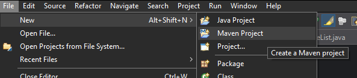
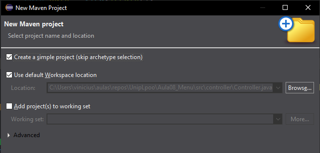
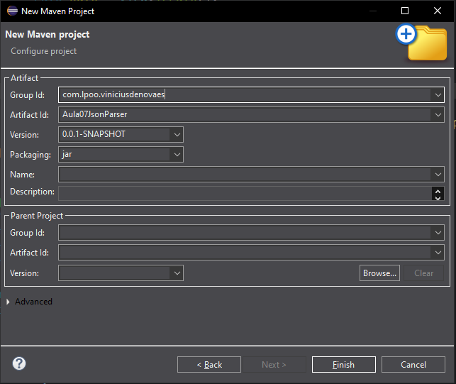
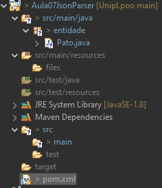

JSON (JavaScript Object Notation) é um formato de texto com o objetivo de guardar informação na forma de dicionário(pares de chaves e valores) e lista.
Nesta aula vamos considerar a classe Pato com um atributo nome e um atributo idade.
Considere, por exemplo, a tabela de patos
| Nome | Idade |
|---|---|
| Ana | 1 |
| Beto | 2 |
| Carla | 3 |
| Dani | 4 |
| Edu | 5 |
Como uma lista json ficaria escrito como
[
{
"nome": "Ana",
"idade": 1
},
{
"nome": "Beto",
"idade": 2
},
{
"nome": "Carla",
"idade": 3
},
{
"nome": "Dani",
"idade": 4
},
{
"nome": "Edu",
"idade": 5
}
]
O que é um Parse? Um parse pode ser entendido como transformar uma informação de texto (um texto json ou csv) em uma estrutura de dados que pode ser entendido pelo Java, como coleções e objetos.
Então essa seção poderia se chamar:
Até a presenta data não existe uma biblioteca nativa de Java para fazer um parse de um Json.
Então vamos usar uma biblioteca externa da Google chamada Gson.
Links úteis:
Tutorial
User Guide
Repositório Maven
Ao invés de inicializar um projeto normal, vamos fazer um projeto Maven.
Em um projeto Maven teremos um arquivo de configuração onde poderemos colocar as dependências e o projeto vai se encarregar de baixar automaticamente as bibliotecas.
Para iniciar um projeto Maven clique em "File -> new -> Maven Project"

Clique em "Create a simple project (skip archetype selection)" para criar um projeto simples

Na próxima página vamos dar um nome para o projeto e para a organização rsponsável pelo projeto:

A configuração do projeto está no arquivo pom.xml

A primeira coisa que você deve fazer é mudar o domínio dos sitem em project de http para https.
O original:
<project
xmlns="http://maven.apache.org/POM/4.0.0"
xmlns:xsi="http://www.w3.org/2001/XMLSchema-instance"
xsi:schemaLocation="http://maven.apache.org/POM/4.0.0
https://maven.apache.org/xsd/maven-4.0.0.xsd">
para:
<project
xmlns="https://maven.apache.org/POM/4.0.0"
xmlns:xsi="https://www.w3.org/2001/XMLSchema-instance"
xsi:schemaLocation="https://maven.apache.org/POM/4.0.0
https://maven.apache.org/xsd/maven-4.0.0.xsd">
Adicione o bloco da dependência do pacote gson dentro do project
<dependencies>
<!-- Source: https://mvnrepository.com/artifact/com.google.code.gson/gson -->
<dependency>
<groupId>com.google.code.gson</groupId>
<artifactId>gson</artifactId>
<version>2.13.2</version>
<scope>compile</scope>
</dependency>
</dependencies>
O resultado final do pom.xml meu projeto ficou assim, se for copiar o código abaixo lembre de mudar o groupId e artifactId
<project
xmlns="https://maven.apache.org/POM/4.0.0"
xmlns:xsi="https://www.w3.org/2001/XMLSchema-instance"
xsi:schemaLocation="https://maven.apache.org/POM/4.0.0
https://maven.apache.org/xsd/maven-4.0.0.xsd">
<modelVersion>4.0.0</modelVersion>
<groupId>com.lpoo.viniciusdenovaes</groupId>
<artifactId>Aula07JsonParser</artifactId>
<version>0.0.1-SNAPSHOT</version>
<dependencies>
<!-- Source: https://mvnrepository.com/artifact/com.google.code.gson/gson -->
<dependency>
<groupId>com.google.code.gson</groupId>
<artifactId>gson</artifactId>
<version>2.13.2</version>
<scope>compile</scope>
</dependency>
</dependencies>
</project>
gson A biblioteca gson transforma objetos de java em um dicionário no formato de texto do json.
Então para transformar um único objeto Pato em uma String no formato json podemos usar o seguinte código.
import com.google.gson.Gson;
import entidade.Pato;
public class TestePatoToJson {
public static void main(String[] args) {
Pato pato = new Pato("Nome do Pato", 1);
System.out.println("----------------");
System.out.println("O Pato original:");
System.out.println(pato);
Gson gson = new Gson();
// Usamos toJson para transformar em texto json
String json = gson.toJson(pato);
System.out.println("----------------");
System.out.println("A String json:");
System.out.println(json);
// Usamos fromJson para transformar de texto para objeto
Pato patoRetrieved = gson.fromJson(json, Pato.class);
System.out.println("----------------");
System.out.println("Pato recuperado a partir da string do json:");
System.out.println(patoRetrieved);
}
}
A saída deste código será
----------------
O Pato original:
Pato [nome=Nome do Pato, idade=1]
----------------
A String json:
{"nome":"Nome do Pato","idade":1}
----------------
Pato recuperado a partir da string do json:
Pato [nome=Nome do Pato, idade=1]
json O seguinte código transforma uma lista em texto no formato json:
package teste;
import java.util.ArrayList;
import java.util.List;
import com.google.gson.Gson;
import com.google.gson.GsonBuilder;
import com.google.gson.reflect.TypeToken;
import entidade.Pato;
public class TesteListaPatosToJson {
public static void main(String[] args) {
List<Pato> patos = new ArrayList<>();
patos.add(new Pato("Ana", 1));
patos.add(new Pato("Beto", 2));
patos.add(new Pato("Carla", 3));
patos.add(new Pato("Dani", 4));
patos.add(new Pato("Edu", 5));
System.out.println("---------------------------");
System.out.println("A lista original:");
for(Pato p: patos)
System.out.println(p);
// Ao inves de criar um objeto Gson diretamente
// usamos um builder para configurar o texto do json
// com o PrettyPrint
// PrettyPrint = Imprimir bonito
// A escolha aqui eh puramente estetica para deixar o texto
// mais legivel
Gson gson = new GsonBuilder().setPrettyPrinting().create();
String json = gson.toJson(patos);
System.out.println("---------------------------");
System.out.println("O texto do json de patos:");
System.out.println(json);
// Agora vamos recuperar a colecao a partir do texto do json
// Aqui determinamos o tipo do objeto que esta serializado na raiz do json
TypeToken<List<Pato>> collectionType = new TypeToken<List<Pato>>(){};
List<Pato> patosRecuperados = gson.fromJson(json, collectionType);
System.out.println("---------------------------");
System.out.println("A lista recuperada:");
for(Pato p: patosRecuperados)
System.out.println(p);
}
}
A saída será:
---------------------------
A lista original:
Pato [nome=Ana, idade=1]
Pato [nome=Beto, idade=2]
Pato [nome=Carla, idade=3]
Pato [nome=Dani, idade=4]
Pato [nome=Edu, idade=5]
---------------------------
O texto do json de patos:
[
{
"nome": "Ana",
"idade": 1
},
{
"nome": "Beto",
"idade": 2
},
{
"nome": "Carla",
"idade": 3
},
{
"nome": "Dani",
"idade": 4
},
{
"nome": "Edu",
"idade": 5
}
]
---------------------------
A lista recuperada:
Pato [nome=Ana, idade=1]
Pato [nome=Beto, idade=2]
Pato [nome=Carla, idade=3]
Pato [nome=Dani, idade=4]
Pato [nome=Edu, idade=5]
Neste exemplo anterior perceba que usamos uma feature chamada PrettyPrint (do inglês imprimir bonito) somente para deixar o texto do json mais legível.
Map em texto json Finalmente, um texto do json também suporta a coleção Map:
O seguinte código transforma um Map indexado pelo nome em texto no formato json:
package teste;
import java.util.ArrayList;
import java.util.List;
import java.util.Map;
import java.util.Map.Entry;
import java.util.TreeMap;
import com.google.gson.Gson;
import com.google.gson.GsonBuilder;
import com.google.gson.reflect.TypeToken;
import entidade.Pato;
public class TesteMapPatosToJson {
// Dicionario para indexar patos pelo nome
private static Map<String, Pato> patos = new TreeMap<>();
// Adiciona um pato no mapeamento
private static void addInMap(Pato p) {patos.put(p.getNome(), p);}
public static void main(String[] args) {
List<Pato> patosLista = new ArrayList<>();
patosLista.add(new Pato("Ana", 1));
patosLista.add(new Pato("Beto", 2));
patosLista.add(new Pato("Carla", 3));
patosLista.add(new Pato("Dani", 4));
patosLista.add(new Pato("Edu", 5));
// Adicionando patos no dicionario
for(Pato p: patosLista)
addInMap(p);
System.out.println("---------------------------");
System.out.println("O Map original:");
for(Entry<String, Pato> entry: patos.entrySet()) {
String nome = entry.getKey();
Pato pato = entry.getValue();
System.out.println(nome + ": " + pato);
}
// Ao inves de criar um objeto Gson diretamente
// usamos um builder para configurar o texto do json
// com o PrettyPrint
// PrettyPrint = Imprimir bonito
// A escolha aqui eh puramente estetica para deixar o texto
// mais legivel
Gson gson = new GsonBuilder().setPrettyPrinting().create();
String json = gson.toJson(patos);
System.out.println("---------------------------");
System.out.println("O texto do json de patos:");
System.out.println(json);
// Agora vamos recuperar a colecao a partir do texto do json
// Aqui determinamos o tipo do objeto que esta serializado na raiz do json
TypeToken<TreeMap<String, Pato>> collectionType = new TypeToken<TreeMap<String, Pato>>(){};
TreeMap<String, Pato> patosRecuperados = gson.fromJson(json, collectionType);
System.out.println("---------------------------");
System.out.println("A lista recuperada:");
for(Entry<String, Pato> e: patosRecuperados.entrySet()) {
String nome = e.getKey();
Pato pato = e.getValue();
System.out.println(nome + ": " + pato);
}
}
}
A saída será:
---------------------------
O Map original:
Ana: Pato [nome=Ana, idade=1]
Beto: Pato [nome=Beto, idade=2]
Carla: Pato [nome=Carla, idade=3]
Dani: Pato [nome=Dani, idade=4]
Edu: Pato [nome=Edu, idade=5]
---------------------------
O texto do json de patos:
{
"Ana": {
"nome": "Ana",
"idade": 1
},
"Beto": {
"nome": "Beto",
"idade": 2
},
"Carla": {
"nome": "Carla",
"idade": 3
},
"Dani": {
"nome": "Dani",
"idade": 4
},
"Edu": {
"nome": "Edu",
"idade": 5
}
}
---------------------------
A lista recuperada:
Ana: Pato [nome=Ana, idade=1]
Beto: Pato [nome=Beto, idade=2]
Carla: Pato [nome=Carla, idade=3]
Dani: Pato [nome=Dani, idade=4]
Edu: Pato [nome=Edu, idade=5]